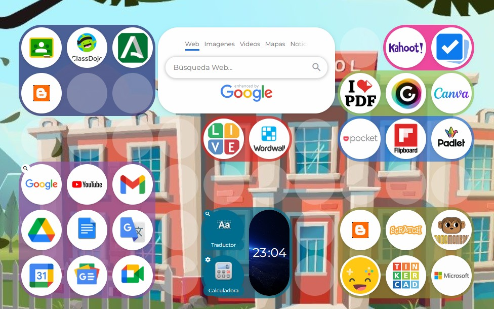

¿QUÉ ES?
La curación de contenidos es el proceso de buscar, seleccionar, organizar y compartir información que es útil o interesante sobre un tema, pues como ya sabéis, hay muchísima información y no toda ella nos sirve para lo que necesitemos en cada momento.
En resumen, es como ser un “organizador de información” que ayuda a otros a encontrar lo más importante sin perderse entre tantas cosas.
Te propongo que puedas crear o usar un organizador de contenidos como el que os muestro más abajo. En concreto, mi organizador es una web muy interesante que se llama "SYMBALOO".
Os dejo a continuación una imagen de mi organizador de contenidos de SYMBALOO para que podáis coger ideas. Además, pincha en el enlace y te llevará a mi página Symbaloo personal para que puedas usarlo sin problema.
